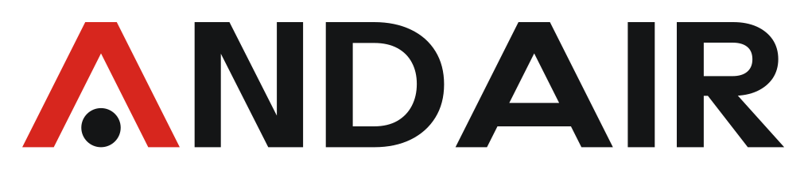
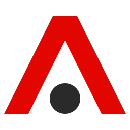
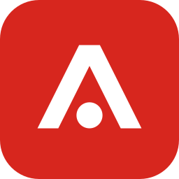
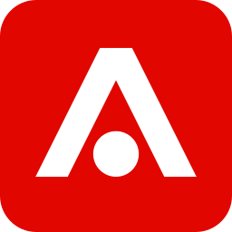

Zeichen und kleine Grössen



Favicon und App-Symbol nutzen das weisse Zeichen im roten Feld, für 16 Pixel etwas kräftiger gezeichnet.
Farben
Signal Red
#E10600 · RGB 225 / 6 / 0
Charcoal Grey
#2A2A2A · RGB 42 / 42 / 42
Moonlit Silver
#C0C0C0 · RGB 192 / 192 / 192
Weiss
#FFFFFF
Druckfarben (CMYK, Pantone) legt die Druckerei anhand eines Andrucks fest.
Anwendung
Schutzraum rundum: mindestens der Durchmesser des Punktes.
Mindestbreite des Logos: 90 Pixel am Bildschirm, 20 mm im Druck. Darunter das Zeichen allein.
Auf Fotos und unruhigen Flächen die weisse oder dunkle Fassung.
Auf Silber die dunkle Fassung: Rot hebt sich dort zu schwach ab.
Nicht verzerren, nicht neu einfärben, Zeichen und Schrift nicht trennen oder verschieben.
Schrift: Instrument Sans Bold, in Pfade umgewandelt.